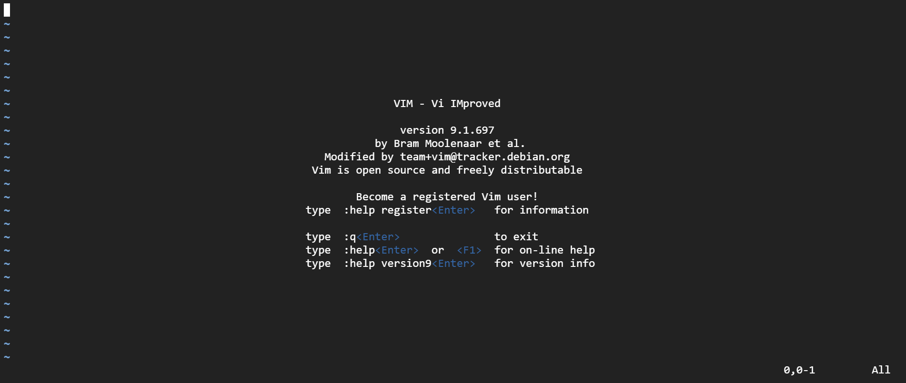

Getting Started
We installed vim so now we can start. First, go ahead and open vim by typing "vim" in your terminal. Right after you open vim, you may see a screen that looks something like this:  Let's first analyse this image before diving in. First there is some infomation about vim in the middle of the screen, and some infomation about where we are in the file near the bottom right. Ignore the "All" in the very corner. Now do you notice something weird? There are many tilda signs in the left side of the screen. Those tilda signs are for indicating that those lines are not part of the text. This is useful when you wanna know whether some lines are actually the part of the file.